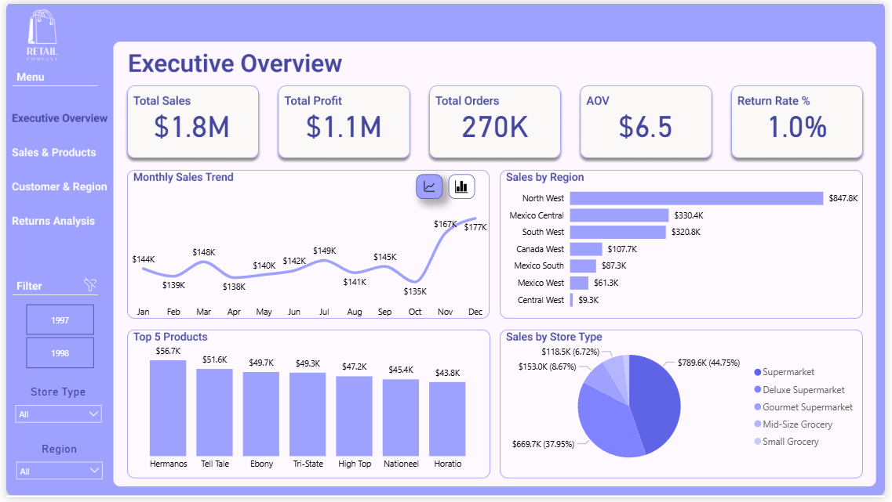
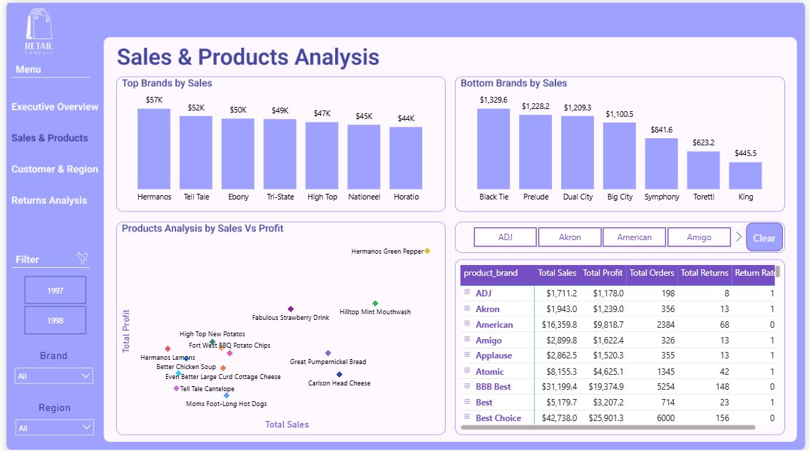
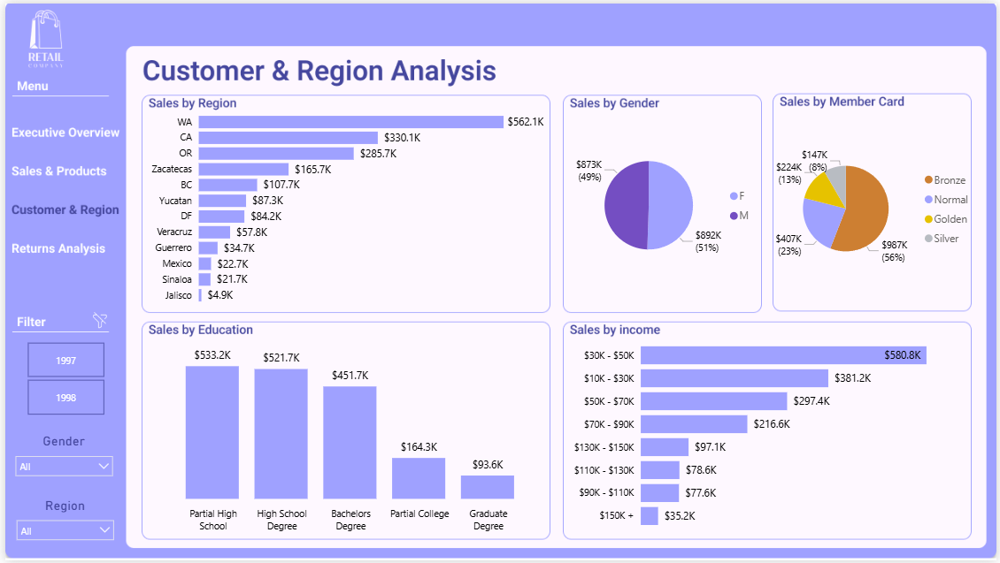
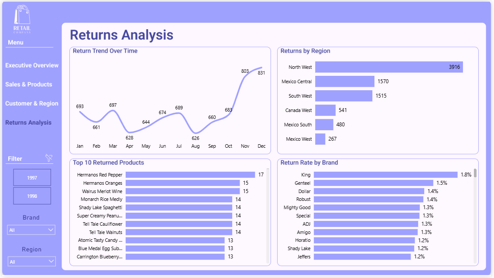
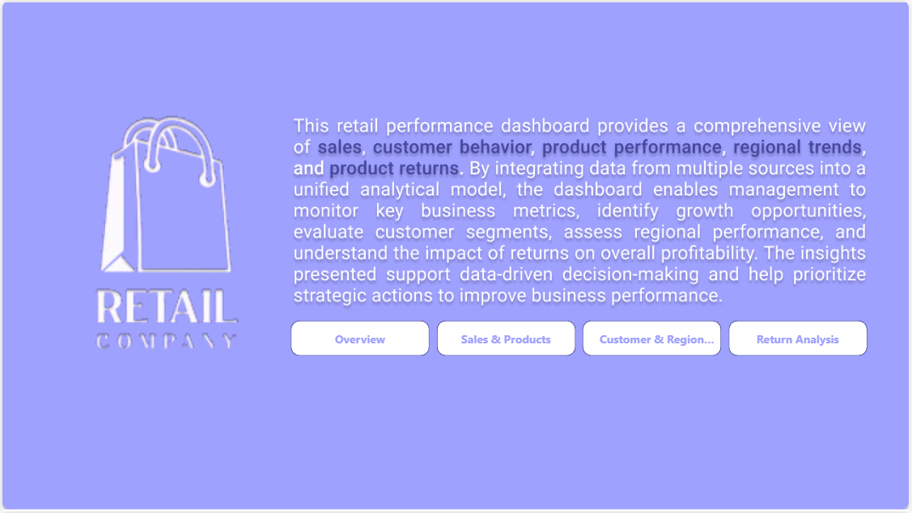

Retail Sales & Performance Analytics
A multi-page retail performance report designed to help decision-makers understand revenue, profitability, customer segments, regional performance, product trends, and merchandise returns.
Explore Dashboards ↓View DocumentationOne view across the retail business
The dashboard brings together performance indicators and detailed breakdowns across sales, products, customers, geography, and returns. Its purpose is to help stakeholders spot revenue concentrations, compare profitability, and identify areas for further investigation.
The executive overview also displays an average order value of $6.5. All metrics reflect the supplied dashboard screenshots and have not been independently recalculated.
Business questions addressed
How is the business performing?
Monitor total sales, profit, order volume, average order value, return rate, and the monthly sales trend.
What drives revenue?
Compare brands, products, store types, regions and customer segments to see where sales are concentrated.
Where are returns concentrated?
Explore return volumes over time, by region and product, and compare return rates across brands.
Five report views
Select any screenshot to enlarge it.





Insights visible in the report
- North West has the highest displayed regional sales, at approximately $847.8K.
- Supermarkets account for the largest displayed store-type sales share, about 44.75%.
- November and December show a marked increase in the monthly sales trend compared with October.
- North West also leads the returns-by-region chart in the displayed view, with 3,916 returns. A higher count alone does not establish a higher return rate.
- The dashboard allows comparison of brands with strong sales against brand-level return rates and profitability.